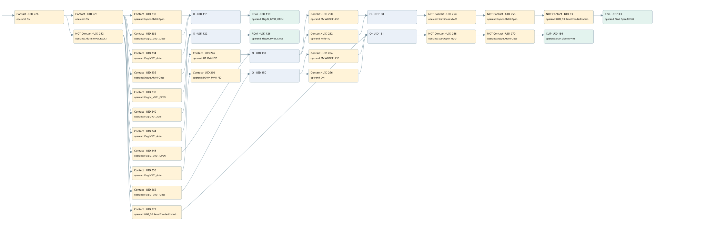

mv01 controlled by tc03
valve control loop · 검색 색인 순서 1 · 원본 내부 NID 추정 1
백업 PLF 원본의 2912054 바이트 위치에서 복원한 XML. 검색 문서 1702의 객체 키 161022007012000000000000와 연결했다. 이름 해석 28/29개. 남은 RefId는 상수 또는 미해석 참조다.
연결 구조 다시 그리기
원본 Part/PCon/Wire를 이용한 연결도다. TIA 화면의 래더 배치 또는 실행 결과를 재현한 그림은 아니다. 핀 연결은 아래 표와 원본 XML을 기준으로 읽는다. 노드 위에 마우스를 두면 피연산자 이름을 볼 수 있다.

접점·코일·블록과 피연산자
| Part UID | Gate | Negated 핀 | 연결 피연산자 |
|---|---|---|---|
| 226 | Contact | operand = ON | |
| 228 | Contact | operand = ON | |
| 230 | Contact | operand = Inputs.MV01 Open | |
| 232 | Contact | operand = Flag.M_MV01_Close | |
| 234 | Contact | operand = Flag.MV01_Auto | |
| 115 | O | ||
| 119 | RCoil | operand = Flag.M_MV01_OPEN | |
| 236 | Contact | operand = Inputs.MV01 Close | |
| 238 | Contact | operand = Flag.M_MV01_OPEN | |
| 240 | Contact | operand = Flag.MV01_Auto | |
| 122 | O | ||
| 126 | RCoil | operand = Flag.M_MV01_Close | |
| 242 | Contact | operand | operand = Allarm.MV01_FAULT |
| 244 | Contact | operand = Flag.MV01_Auto | |
| 246 | Contact | operand = UP MV01 PID | |
| 248 | Contact | operand = Flag.M_MV01_OPEN | |
| 137 | O | ||
| 250 | Contact | operand = MV WORK PULSE | |
| 252 | Contact | operand = RefId 1 / ORef UID 172 | |
| 138 | O | ||
| 254 | Contact | operand | operand = Start Close MV-01 |
| 256 | Contact | operand | operand = Inputs.MV01 Open |
| 23 | Contact | operand | operand = HMI_DB.ResetEncoderProcedure_MV01 |
| 143 | Coil | operand = Start Open MV-01 | |
| 258 | Contact | operand = Flag.MV01_Auto | |
| 260 | Contact | operand = DOWN MV01 PID | |
| 262 | Contact | operand = Flag.M_MV01_Close | |
| 150 | O | ||
| 264 | Contact | operand = MV WORK PULSE | |
| 266 | Contact | operand = ON | |
| 273 | Contact | operand = HMI_DB.ResetEncoderProcedure_MV01 | |
| 151 | O | ||
| 268 | Contact | operand | operand = Start Open MV-01 |
| 270 | Contact | operand | operand = Inputs.MV01 Close |
| 156 | Coil | operand = Start Close MV-01 |
접점 경로를 펼친 조건식
Contact·O/A·비교기의 원본 연결을 읽기 쉽게 펼친 보조 해석이다. POWER는 전원 레일 시작을 뜻한다. 호출 블록·에지·타이머의 내부 동작과 다중 쓰기 순서는 이 표로 실행 검증하지 않았다. 미해석 핀과 RefId는 원문 연결표에서 확인한다.
| UID | 동작 | 대상 | 원본 접점 경로 | 내용 |
|---|---|---|---|---|
| 119 | RCoil | Flag.M_MV01_OPEN | ((ON AND Inputs.MV01 Open) OR (ON AND Flag.M_MV01_Close) OR (ON AND Flag.MV01_Auto)) | 조건 성립 시 Reset |
| 126 | RCoil | Flag.M_MV01_Close | ((ON AND Inputs.MV01 Close) OR (ON AND Flag.M_MV01_OPEN) OR (ON AND Flag.MV01_Auto)) | 조건 성립 시 Reset |
| 143 | Coil | Start Open MV-01 | (((((((((ON AND NOT [Allarm.MV01_FAULT]) AND Flag.MV01_Auto) AND UP MV01 PID) OR ((ON AND NOT [Allarm.MV01_FAULT]) AND Flag.M_MV01_OPEN)) AND MV WORK PULSE) OR (((((ON AND NOT [Allarm.MV01_FAULT]) AND Flag.MV01_Auto) AND UP MV01 PID) OR ((ON AND NOT [Allarm.MV01_FAULT]) AND Flag.M_MV01_OPEN)) AND ORef UID 172)) AND NOT [Start Close MV-01]) AND NOT [Inputs.MV01 Open]) AND NOT [HMI_DB.ResetEncoderProcedure_MV01]) | 조건에 따른 Coil 기록 |
| 156 | Coil | Start Close MV-01 | ((((((((ON AND NOT [Allarm.MV01_FAULT]) AND Flag.MV01_Auto) AND DOWN MV01 PID) OR ((ON AND NOT [Allarm.MV01_FAULT]) AND Flag.M_MV01_Close)) AND MV WORK PULSE) OR (((((ON AND NOT [Allarm.MV01_FAULT]) AND Flag.MV01_Auto) AND DOWN MV01 PID) OR ((ON AND NOT [Allarm.MV01_FAULT]) AND Flag.M_MV01_Close)) AND ON) OR ((ON AND NOT [Allarm.MV01_FAULT]) AND HMI_DB.ResetEncoderProcedure_MV01)) AND NOT [Start Open MV-01]) AND NOT [Inputs.MV01 Close]) | 조건에 따른 Coil 기록 |
원본 배선 연결
| Wire UID | 동일 Wire 연결 끝점 |
|---|---|
| 272 | Powerrail {} ↔ Part 226.in |
| 184 | ORef 157 (ON) ↔ Part 226.operand |
| 227 | Part 226.out ↔ Part 228.in ↔ Part 242.in |
| 185 | ORef 158 (ON) ↔ Part 228.operand |
| 229 | Part 228.out ↔ Part 230.in ↔ Part 232.in ↔ Part 234.in ↔ Part 236.in ↔ Part 238.in ↔ Part 240.in |
| 186 | ORef 159 (Inputs.MV01 Open) ↔ Part 230.operand |
| 231 | Part 230.out ↔ Part 115.in1 |
| 187 | ORef 160 (Flag.M_MV01_Close) ↔ Part 232.operand |
| 233 | Part 232.out ↔ Part 115.in2 |
| 188 | ORef 161 (Flag.MV01_Auto) ↔ Part 234.operand |
| 235 | Part 234.out ↔ Part 115.in3 |
| 189 | Part 115.out ↔ Part 119.in |
| 191 | ORef 162 (Flag.M_MV01_OPEN) ↔ Part 119.operand |
| 192 | ORef 163 (Inputs.MV01 Close) ↔ Part 236.operand |
| 237 | Part 236.out ↔ Part 122.in1 |
| 193 | ORef 164 (Flag.M_MV01_OPEN) ↔ Part 238.operand |
| 239 | Part 238.out ↔ Part 122.in2 |
| 194 | ORef 165 (Flag.MV01_Auto) ↔ Part 240.operand |
| 241 | Part 240.out ↔ Part 122.in3 |
| 195 | Part 122.out ↔ Part 126.in |
| 197 | ORef 166 (Flag.M_MV01_Close) ↔ Part 126.operand |
| 199 | ORef 167 (Allarm.MV01_FAULT) ↔ Part 242.operand |
| 243 | Part 242.out ↔ Part 244.in ↔ Part 248.in ↔ Part 258.in ↔ Part 262.in ↔ Part 273.in |
| 200 | ORef 168 (Flag.MV01_Auto) ↔ Part 244.operand |
| 245 | Part 244.out ↔ Part 246.in |
| 201 | ORef 169 (UP MV01 PID) ↔ Part 246.operand |
| 247 | Part 246.out ↔ Part 137.in1 |
| 203 | ORef 170 (Flag.M_MV01_OPEN) ↔ Part 248.operand |
| 249 | Part 248.out ↔ Part 137.in2 |
| 204 | Part 137.out ↔ Part 250.in ↔ Part 252.in |
| 205 | ORef 171 (MV WORK PULSE) ↔ Part 250.operand |
| 251 | Part 250.out ↔ Part 138.in1 |
| 206 | ORef 172 (RefId 1) ↔ Part 252.operand |
| 253 | Part 252.out ↔ Part 138.in2 |
| 207 | Part 138.out ↔ Part 254.in |
| 208 | ORef 173 (Start Close MV-01) ↔ Part 254.operand |
| 255 | Part 254.out ↔ Part 256.in |
| 209 | ORef 174 (Inputs.MV01 Open) ↔ Part 256.operand |
| 257 | Part 256.out ↔ Part 23.in |
| 22 | ORef 24 (HMI_DB.ResetEncoderProcedure_MV01) ↔ Part 23.operand |
| 25 | Part 23.out ↔ Part 143.in |
| 211 | ORef 175 (Start Open MV-01) ↔ Part 143.operand |
| 212 | ORef 176 (Flag.MV01_Auto) ↔ Part 258.operand |
| 259 | Part 258.out ↔ Part 260.in |
| 213 | ORef 177 (DOWN MV01 PID) ↔ Part 260.operand |
| 261 | Part 260.out ↔ Part 150.in1 |
| 215 | ORef 178 (Flag.M_MV01_Close) ↔ Part 262.operand |
| 263 | Part 262.out ↔ Part 150.in2 |
| 216 | Part 150.out ↔ Part 264.in ↔ Part 266.in |
| 217 | ORef 179 (MV WORK PULSE) ↔ Part 264.operand |
| 265 | Part 264.out ↔ Part 151.in1 |
| 218 | ORef 180 (ON) ↔ Part 266.operand |
| 267 | Part 266.out ↔ Part 151.in2 |
| 276 | ORef 274 (HMI_DB.ResetEncoderProcedure_MV01) ↔ Part 273.operand |
| 21 | Part 273.out ↔ Part 151.in3 |
| 219 | Part 151.out ↔ Part 268.in |
| 220 | ORef 181 (Start Open MV-01) ↔ Part 268.operand |
| 269 | Part 268.out ↔ Part 270.in |
| 221 | ORef 182 (Inputs.MV01 Close) ↔ Part 270.operand |
| 271 | Part 270.out ↔ Part 156.in |
| 223 | ORef 183 (Start Close MV-01) ↔ Part 156.operand |
식별자 해석 근거 29개
| ORef UID | RefId | 이름 | IdentXmlPart 파일 | 해석 방법 |
|---|---|---|---|---|
| 157 | 1 | ON | 0617-IdentXmlPart.xml | UID/RID + search-text + NID agreement |
| 158 | 1 | ON | 0617-IdentXmlPart.xml | UID/RID + search-text + NID agreement |
| 159 | 172 | Inputs.MV01 Open | 0619-IdentXmlPart.xml | UID/RID + search-text + NID agreement |
| 160 | 6 | Flag.M_MV01_Close | 0619-IdentXmlPart.xml | UID/RID + search-text + NID agreement |
| 161 | 7 | Flag.MV01_Auto | 0619-IdentXmlPart.xml | UID/RID + search-text + NID agreement |
| 162 | 8 | Flag.M_MV01_OPEN | 0619-IdentXmlPart.xml | UID/RID + search-text + NID agreement |
| 163 | 173 | Inputs.MV01 Close | 0619-IdentXmlPart.xml | UID/RID + search-text + NID agreement |
| 164 | 8 | Flag.M_MV01_OPEN | 0619-IdentXmlPart.xml | UID/RID + search-text + NID agreement |
| 165 | 7 | Flag.MV01_Auto | 0619-IdentXmlPart.xml | UID/RID + search-text + NID agreement |
| 166 | 6 | Flag.M_MV01_Close | 0619-IdentXmlPart.xml | UID/RID + search-text + NID agreement |
| 167 | 11 | Allarm.MV01_FAULT | 0619-IdentXmlPart.xml | UID/RID + search-text + NID agreement |
| 168 | 7 | Flag.MV01_Auto | 0619-IdentXmlPart.xml | UID/RID + search-text + NID agreement |
| 169 | 12 | UP MV01 PID | 0617-IdentXmlPart.xml | UID/RID + search-text + NID agreement |
| 170 | 8 | Flag.M_MV01_OPEN | 0619-IdentXmlPart.xml | UID/RID + search-text + NID agreement |
| 171 | 13 | MV WORK PULSE | 0617-IdentXmlPart.xml | UID/RID + search-text + NID agreement |
| 172 | 1 | 미해석 RefId | 식별 선언 원본 참조 | 미해석 |
| 173 | 14 | Start Close MV-01 | 0617-IdentXmlPart.xml | UID/RID + search-text + NID agreement |
| 174 | 172 | Inputs.MV01 Open | 0619-IdentXmlPart.xml | UID/RID + search-text + NID agreement |
| 24 | 196 | HMI_DB.ResetEncoderProcedure_MV01 | 0619-IdentXmlPart.xml | UID/RID + search-text + NID agreement |
| 175 | 15 | Start Open MV-01 | 0617-IdentXmlPart.xml | UID/RID + search-text + NID agreement |
| 176 | 7 | Flag.MV01_Auto | 0619-IdentXmlPart.xml | UID/RID + search-text + NID agreement |
| 177 | 16 | DOWN MV01 PID | 0617-IdentXmlPart.xml | UID/RID + search-text + NID agreement |
| 178 | 6 | Flag.M_MV01_Close | 0619-IdentXmlPart.xml | UID/RID + search-text + NID agreement |
| 179 | 13 | MV WORK PULSE | 0617-IdentXmlPart.xml | UID/RID + search-text + NID agreement |
| 180 | 1 | ON | 0617-IdentXmlPart.xml | UID/RID + search-text + NID agreement |
| 274 | 196 | HMI_DB.ResetEncoderProcedure_MV01 | 0619-IdentXmlPart.xml | UID/RID + search-text + NID agreement |
| 181 | 15 | Start Open MV-01 | 0617-IdentXmlPart.xml | UID/RID + search-text + NID agreement |
| 182 | 173 | Inputs.MV01 Close | 0619-IdentXmlPart.xml | UID/RID + search-text + NID agreement |
| 183 | 14 | Start Close MV-01 | 0617-IdentXmlPart.xml | UID/RID + search-text + NID agreement |
검색 코드 보조 자료
참조 명칭을 찾기 위한 자료이며 실행 순서나 AND/OR 관계는 위 연결표로 확인한다.
"on" "on" "inputs"."mv01 open" "flag".m_mv01_open "allarm".mv01_fault "flag".mv01_auto "up mv01 pid" "mv work pulse" "start close mv-01" "inputs"."mv01 open" "hmi_db".resetencoderprocedure_mv01 "start open mv-01" "flag".m_mv01_open "flag".mv01_auto "down mv01 pid" "mv work pulse" "start open mv-01" "inputs"."mv01 close" "start close mv-01" "on" "flag".m_mv01_close "hmi_db".resetencoderprocedure_mv01 "on" "flag".m_mv01_close "flag".mv01_auto "inputs"."mv01 close" "flag".m_mv01_close "flag".m_mv01_open "flag".mv01_auto